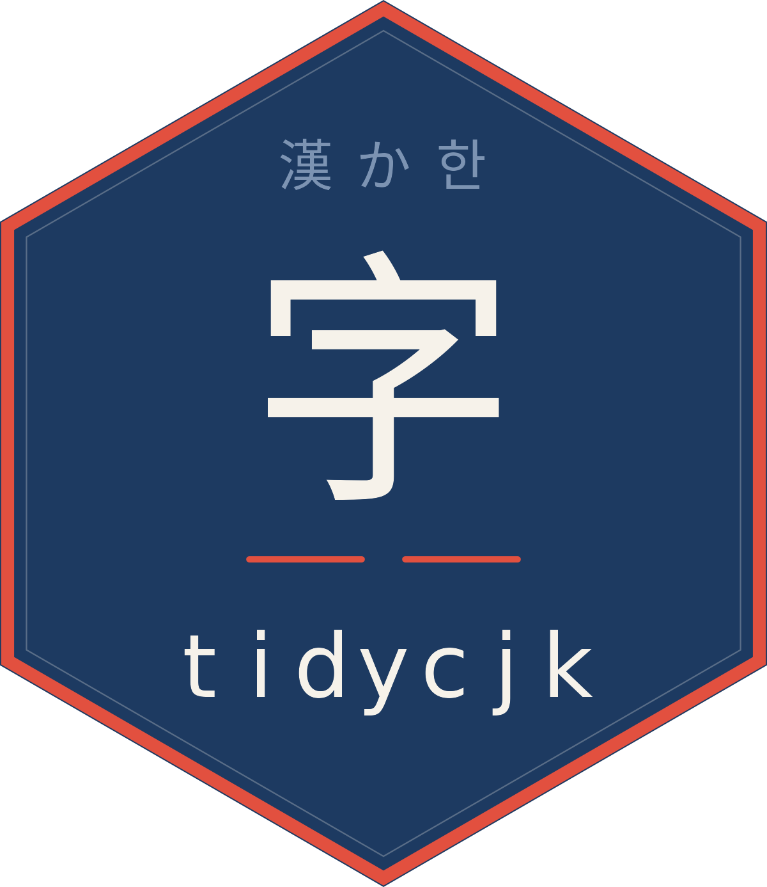

tidycjk
Chinese, Japanese and Korean text in R: measured in columns, split into words, and kept in tibbles.

📦 Install
install.packages("tidycjk")library(tidycjk)-
cjk_width("中文")prints4: two characters, four terminal columns.
✨ What you get
| Task | Verbs |
|---|---|
| Detect |
has_cjk() · cjk_script() · cjk_detect_language() · cjk_ratio()
|
| Lay out |
cjk_width() · cjk_pad() · cjk_truncate() · cjk_wrap()
|
| Segment |
cjk_segment() · cjk_tokens() · cjk_sentences() · cjk_ngrams()
|
| Clean |
to_halfwidth() · to_fullwidth() · cjk_normalize() · cjk_strip_punct()
|
| Convert |
cjk_romanize() · cjk_simplify() · cjk_traditionalize() · to_hiragana() · to_katakana() · cjk_jamo() · cjk_compose_jamo()
|
| Summarise, sort |
cjk_summary() · cjk_char_counts() · cjk_sort() · cjk_order() · cjk_blocks()
|
Every verb is vectorised and keeps NA; the three that take (data, column) return a tibble for a dplyr pipeline.
🔍 Examples
cjk_detect_language(c("こんにちは", "안녕하세요", "東京都"))
#> [1] "japanese" "korean" NA
cjk_segment("我今天很開心", engine = "icu")
#> [[1]]
#> [1] "我" "今天" "很" "開心"
cjk_pad(c("中文", "abcd"), 6)
#> [1] "中文 " "abcd "
cjk_sort(c("張", "王", "李"), locale = "zh")
#> [1] "李" "王" "張"
cjk_summary(data.frame(text = c("我今天很開心", "hello 中文", "no CJK")), text)
#> # A tibble: 1 × 4
#> n_docs n_with_cjk prop_with_cjk mean_ratio
#> <int> <int> <dbl> <dbl>
#> 1 3 2 0.667 0.417東京都 is Tokyo: Japanese written only in Han characters, which no script test can tell from Chinese, so the answer is NA rather than a guess.
⚠️ Gotchas
| Trap | What to do |
|---|---|
| Han-only text has no detectable language | pass han_only = "chinese" if you know the corpus |
engine has no default |
"icu" for words, "character" for characters |
cjk_romanize() reads each Han character alone, as Chinese |
treat it as a sort key; use gibasa for Japanese readings |
sort() on Han depends on LC_COLLATE
|
cjk_sort(x, locale = "zh") |
| Plain NFC rewrites 460 of the 472 compatibility ideographs | keep the original column if the distinction matters |
| A file in GBK, Big5 or Shift_JIS | name it when reading: read.csv(f, fileEncoding = "GBK")
|
📚 Learn more
Four vignettes (tidycjk, segmentation, width-and-layout, transliteration) and a visual tour. For more than ICU gives: gibasa (MeCab, with part of speech), udpipe (models for all three languages), jiebaR (archived from CRAN, install from GitHub) and OpenCC (regional vocabulary).